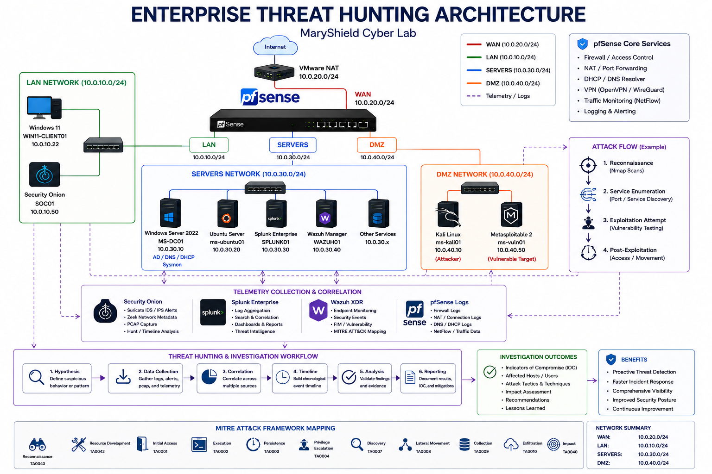
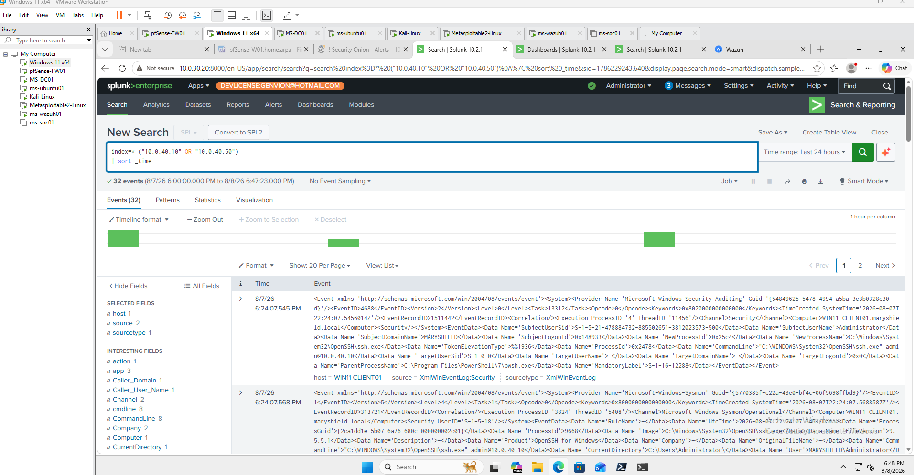
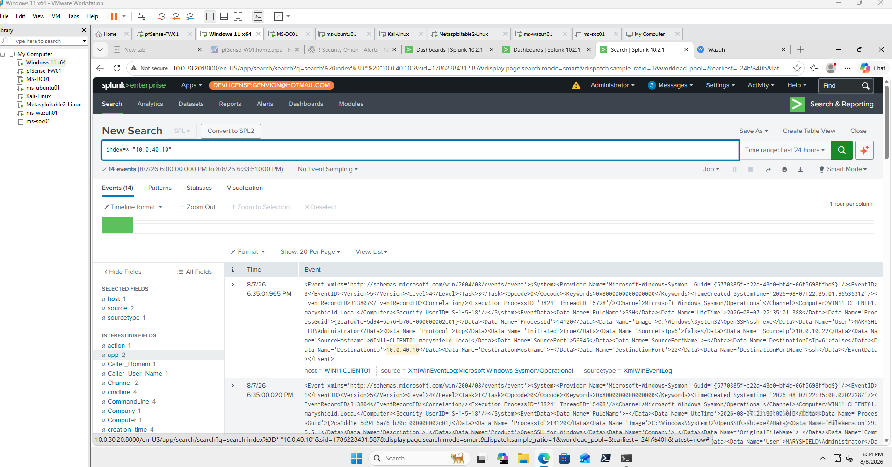
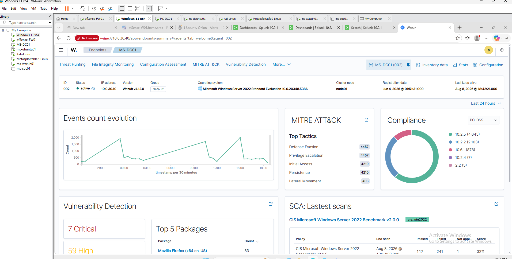
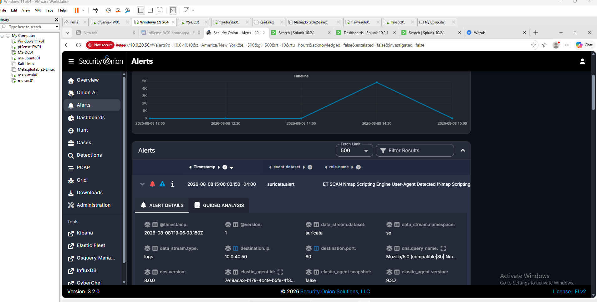
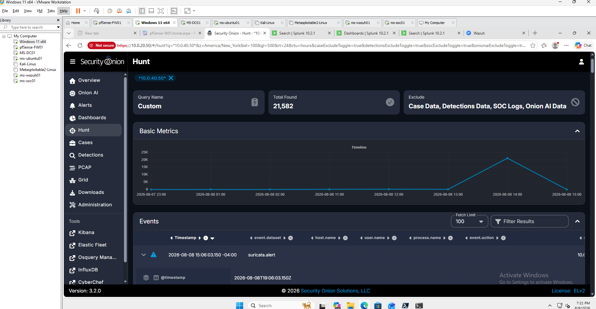
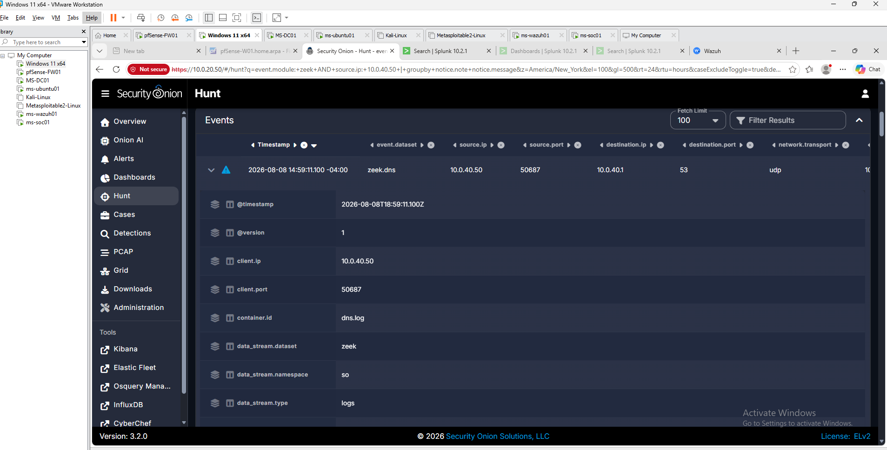
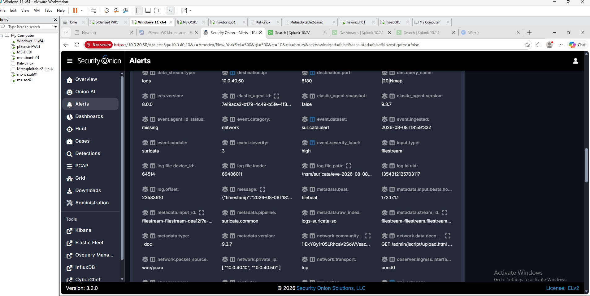
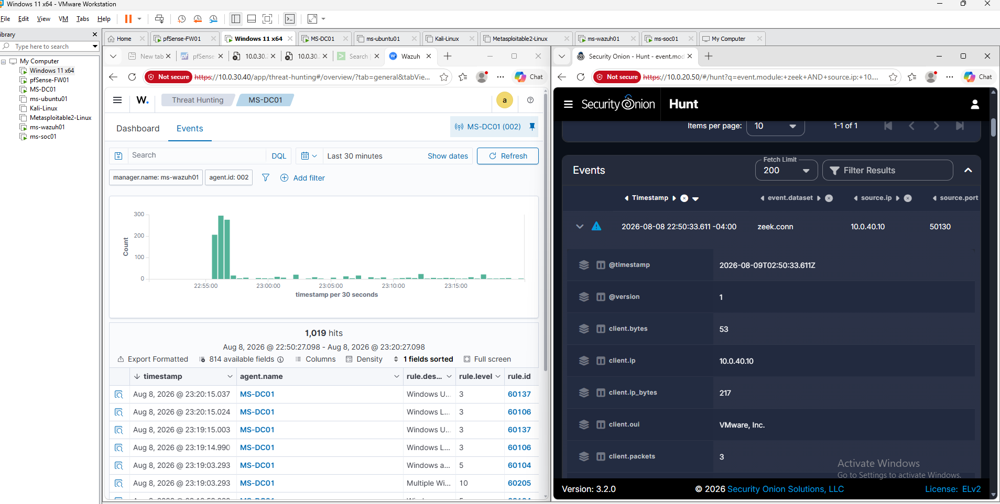

Enterprise Threat Hunting
Project Overview
This project demonstrates a structured threat hunting investigation within the MaryShield Cyber Lab using telemetry collected from Splunk Enterprise, Wazuh XDR, Security Onion, pfSense, Windows Event Logs, Sysmon, and network security monitoring tools.
The objective is to move beyond individual alerts and proactively investigate suspicious activity by correlating endpoint, network, firewall, and SIEM data across multiple security platforms.
Controlled attack activity generated from Kali Linux against authorized lab systems provides realistic telemetry for detection, correlation, timeline development, and security analysis.
Enterprise Threat Hunting Architecture
The architecture below shows how attack activity, endpoint telemetry, network traffic, firewall events, and detection data are collected and correlated throughout the MaryShield Cyber Lab.

Threat Hunting Methodology
The threat hunting process follows a repeatable investigative methodology designed to identify suspicious behavior, validate findings, and build an evidence-based timeline.
1. Hypothesis
Define suspicious activity to investigate based on observed behavior, alerts, or known attack techniques.
2. Data Collection
Gather endpoint, network, firewall, authentication, and security telemetry from multiple sources.
3. Correlation
Compare timestamps, users, hosts, IP addresses, ports, processes, and alerts across security platforms.
4. Timeline Development
Reconstruct the sequence of events from initial reconnaissance through detection and investigation.
5. Validation
Determine whether observed activity represents legitimate behavior, suspicious activity, or a confirmed security event.
6. Reporting
Document findings, evidence, risk, detection coverage, and recommended security improvements.
Threat Hunting Data Sources
Multiple telemetry sources were used to provide layered visibility into activity across endpoints and network segments.
Windows Event Logs
Authentication, account activity, system events, and security auditing information.
Sysmon
Detailed process creation, network connections, command lines, hashes, and endpoint telemetry.
Splunk Enterprise
Centralized searching, correlation, dashboards, and timeline analysis.
Wazuh XDR
Endpoint alerts, FIM events, vulnerability findings, and security analytics.
Security Onion
Suricata alerts, Zeek metadata, Hunt, and packet-level network visibility.
pfSense
Firewall allow and block events, network states, routing, and connection information.
Zeek
Protocol metadata for DNS, HTTP, SMB, SSL/TLS, connections, and other network activity.
Packet Capture
Packet-level evidence used to validate and investigate suspicious network communications.
Attack Timeline
A controlled attack sequence was generated from Kali Linux to provide realistic telemetry for the threat hunting investigation.
| Stage | Activity | Primary Evidence |
|---|---|---|
| 1 | Host discovery | Security Onion / pfSense |
| 2 | Nmap network scanning | Suricata / Zeek |
| 3 | Service enumeration | Security Onion / PCAP |
| 4 | Controlled exploitation attempt | Security Onion / pfSense |
| 5 | Endpoint activity | Wazuh / Sysmon |
| 6 | SIEM correlation | Splunk Enterprise |
| 7 | Analyst investigation | Combined telemetry |

Splunk Enterprise Investigation
Splunk Enterprise was used to correlate Windows Event Logs, Sysmon telemetry, authentication events, and other centralized security data.
Investigation Activities
- Search by hostname and IP address.
- Identify failed authentication events.
- Analyze process creation activity.
- Review PowerShell execution.
- Correlate event timestamps.
- Build an investigation timeline.
Example SPL Searches
index=* host=WIN11-CLIENT01
index=* EventCode=4625
index=* sourcetype=XmlWinEventLog:Microsoft-Windows-Sysmon/Operational
index=* "10.0.40.10"

Wazuh XDR Investigation
Wazuh XDR was used to investigate endpoint activity, security alerts, file changes, system configuration findings, and MITRE ATT&CK mappings.
Investigation Areas
- Security Events
- File Integrity Monitoring
- Agent activity
- MITRE ATT&CK mapping
- Rule severity
- System inventory

Security Onion Investigation
Security Onion provided network-level visibility into reconnaissance, service enumeration, and other suspicious communications.
Investigation Components
- Alerts
- Hunt
- Suricata IDS
- Zeek network metadata
- Packet Capture
- Timeline analysis
Alerts

Hunt

Zeek

Suricata

Packet Capture

Evidence Collection
Indicators and investigative artifacts were documented throughout the threat hunting process to support correlation and reporting.
Source IP
10.0.40.10 — Kali Linux penetration testing workstation.
Target IP
Authorized lab systems associated with the controlled investigation.
Ports
Network ports identified during reconnaissance and service enumeration.
Protocols
DNS, SMB, FTP, HTTP, SSH, Kerberos, LDAP, and other protocols associated with the investigation.
Alert Severity
Security alerts were reviewed by severity, source, destination, rule, and timestamp.
MITRE ATT&CK
Observed activity was mapped to applicable tactics and techniques when supported by the evidence.

Incident Timeline
Correlated evidence was organized chronologically to reconstruct the sequence of activity observed during the investigation.
| Time | Event | Source | Analyst Interpretation |
|---|---|---|---|
| Time 1 | Host discovery initiated | Security Onion | Initial reconnaissance activity detected. |
| Time 2 | Multiple ports scanned | Suricata / Zeek | Network service discovery activity identified. |
| Time 3 | Service enumeration | Zeek / PCAP | Specific exposed services were investigated. |
| Time 4 | Controlled exploitation activity | Security Onion / pfSense | Suspicious communications associated with authorized exploitation testing. |
| Time 5 | Endpoint event generated | Wazuh / Sysmon | Host telemetry provided additional context. |
| Time 6 | Events correlated | Splunk Enterprise | Multiple telemetry sources aligned by timestamp and system. |
| Time 7 | Investigation completed | SOC Analyst | Evidence reviewed and findings documented. |